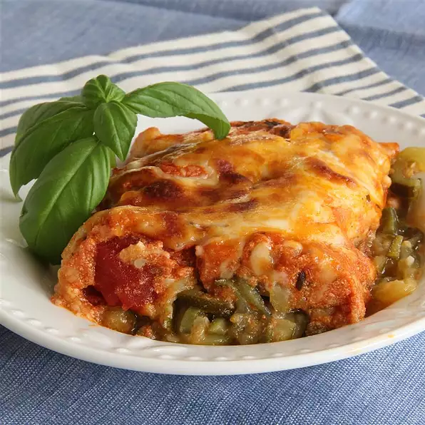

Zucchini Noodle Casserole

One of my favorite low-calorie dishes that makes me forget about pasta!
Ingredient
- 3 tablespoons olive oil, divided, or as needed
- 5 zucchini squash, cut into 'noodles' using a spiral slicer or vegetable peeler
- ¼ cup minced garlic
- 1 (16 ounce) jar marinara sauce, or to taste
- 1 (7 ounce) container 2% Greek yogurt
- 1 pinch Italian seasoning, or to taste
- salt and ground black pepper to taste
- ½ cup shredded mozzarella cheese
Directions
- Preheat oven to 425 degrees F (220 degrees C).
- Heat 1 tablespoon oil in a large skillet over medium-high heat. Working in batches, saute enough zucchini to fit in the skillet with 1 teaspoon garlic until zucchini is slightly browned and softened, 3 to 6 minutes. Repeat with remaining olive oil, zucchini, and garlic. Transfer cooked zucchini mixture to a 9x13-inch baking dish.
- Whisk marinara sauce, yogurt, Italian seasoning, salt, and black pepper together in a saucepan over low heat; cook and stir until sauce is warmed through, 5 to 10 minutes. Pour sauce over zucchini mixture in the baking dish. Sprinkle mozzarella cheese and a pinch of Italian seasoning over the top.
- Bake in the preheated oven until cheese is bubbling, 20 to 30 minutes.
Nutrition Facts
- 292 calories
- protein 12g
- carbohydrates 25.7g
- fat 16.7g
- cholesterol 13.8mg
- sodium 618.1mg
Home